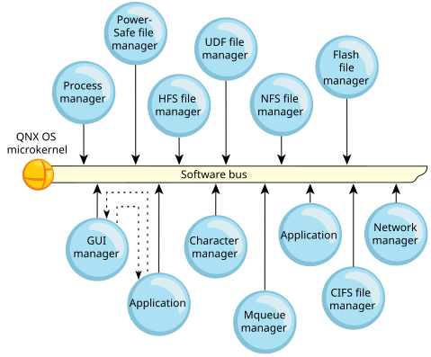

The QNX OS architecture consists of the microkernel and several cooperating processes. These processes communicate with each other via various forms of interprocess communication (IPC). Message passing is the primary form of IPC in QNX OS.
software busthat lets you dynamically plug in/out OS modules.

The above diagram shows an application sending a message to the GUI manager, and the GUI manager responding.